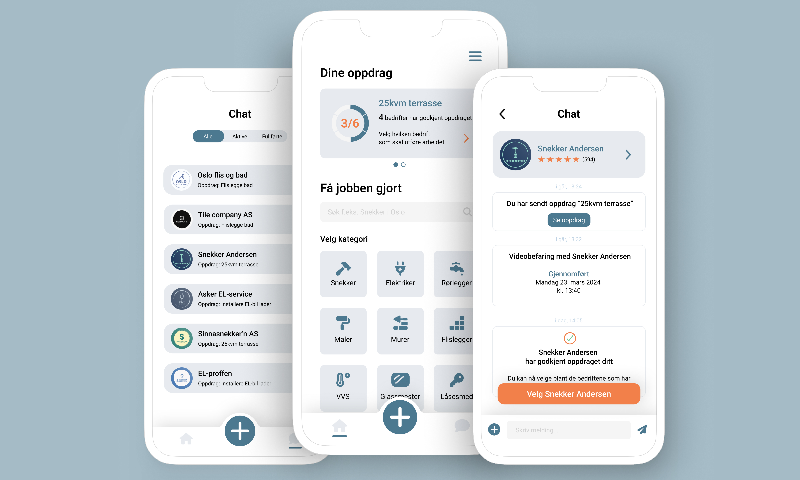

KODEKLANG
Utvikling av applikasjon for Kodeklang etter deres forespørsel av en applikasjon som effektiviserer interaksjon mellom kunde og håndverksbedrifter.
Produktutvikling • UX/UI design • Prototyping • Brukertesting • Kanban
Verktøy: Figma, Slack, GitHub

Problem
Bygg- og anleggsbransjen er den minst digitaliserte bransjen i landet. Derfor har vår oppdragsgiver
Kodeklang sett et stort potensial for utbedring og innovasjon innenfor feltet.
Prosjektet har gått ut
på å gjennomføre en produktutviklingsprosess fra idé til produksjon av en helhetlig digital løsning som skal
effektivisere interaksjon mellom kunder og håndverksbedrifter. Målet var å gjøre det enklere for kunder å finne og
avtale tjenester med lokale håndverkere, kommunisere underveis og holde oversikt over dokumentasjon.
Løsning
Vi har utviklet et appkonsept der kunder kan opprette oppdrag, velge håndverksbedrift og avtale tidspunkt,
med kommunikasjon og dokumentasjon samlet på ett sted.
Gjennom brukerundersøkelser, prototyping i Figma
og brukertesting forbedret vi løsningen underveis og leverte en interaktiv prototype og
en teknisk løsning med grunnleggende funksjonalitet som Kodeklang kunne videreutvikle.
Min rolle
I dette tverrfaglige prosjektet for Kodeklang var jeg eneste UX/UI designer og har med det utviklet wireframes
og interaktive prototyper i Figma. Jeg har også planlagt, gjennomført og ledet brukertester som ga grunnlag for videre forbedringer av løsningen.
Jeg har også hatt et ekstra ansvar som gruppeleder. Jeg har derfor hatt en viktig rolle med å sørge for jevn fremdrift i prosjektet og
legge til rette for åpen kommunikasjon og aktiv deltakelse i teamet.
Prosess
Vi valgte en smidig tilnærming til prosjektet, som har gjort at vi gjennom hele prosjektperioden har hatt muligheten for iterasjoner, slik
at vi kan komme fram til den beste løsningen. Som arbeidsmoetode valgte vi Kanban for å optimalisere arbeidsflyten, organisere oppgaver og
tilpasse arbeidet etter hvert som vi fikk ny innsikt.
Metoden ga oss fleksibilitet til å håndtere endringer og jobbe parallelt på tvers av fagområder. Vi brukte en Kanban-tavle i GitHub
for å synliggjøre oppgaver og følge fremdriften, kombinert med en brukersentrert designprosess der brukerundersøkelser,
prototyping og brukertesting dannet grunnlaget for løpende forbedringer av løsningen.

Resultat
Resultatet ble en interaktiv prototype og en teknisk løsning med grunnleggende funksjonalitet som gjør det enklere for
kunder å finne og kommunisere med lokale håndverksbedrifter.
Løsningen bygger på kartlagte brukerbehov og ble forbedret
gjennom brukertesting og flere iterasjoner. Prosjektet ga Kodeklang et konkret grunnlag for videreutvikling av en app
som samler oppdrag, avtaler og dokumentasjon på ett sted.